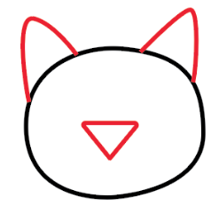
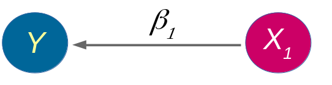
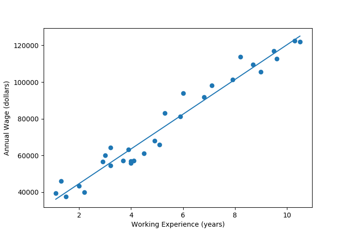
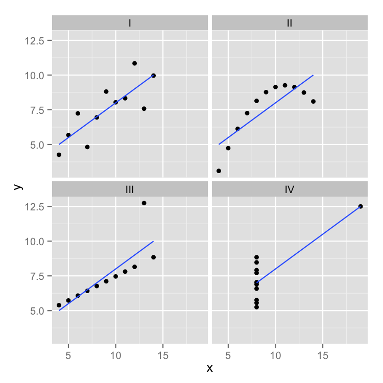
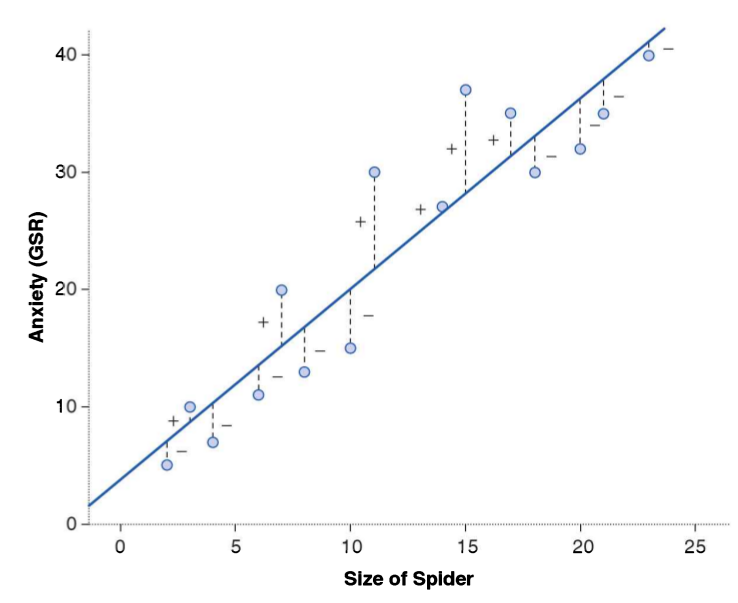
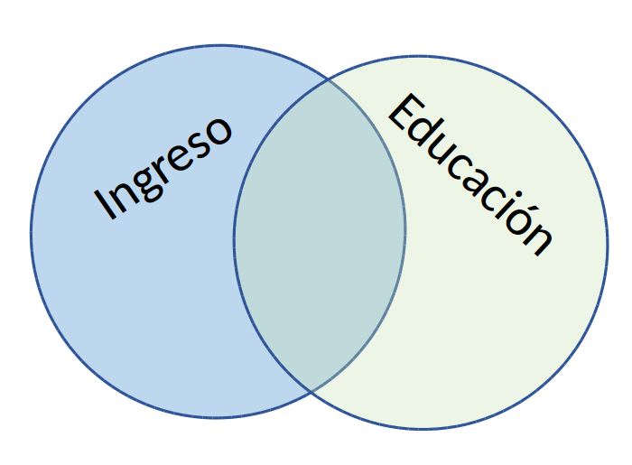
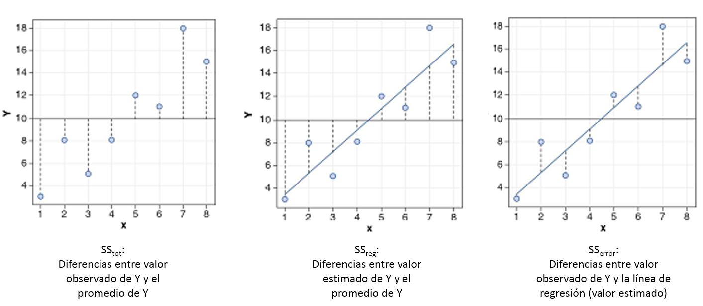
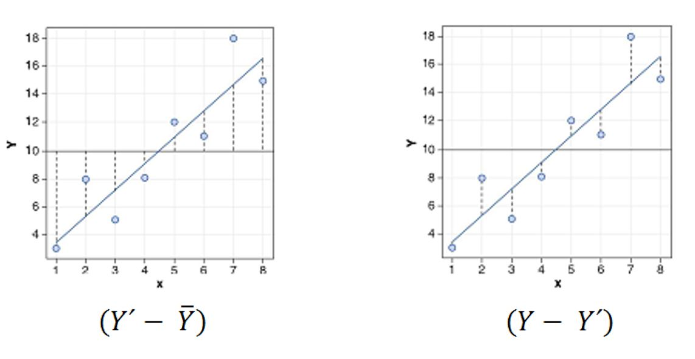

Métodos estadísticos para
Ciencias Sociales III
Kevin Carrasco
Sociología - UNAB
2do Sem 2026
https://metod3-unab.netlify.app/
Sesión 3
Repaso sesión anterior
R2: ajuste y residuos
Inferencia
¿Dónde quedamos?
La recta de regresión se estima con mínimos cuadrados ordinarios (OLS), el criterio que minimiza la suma de los residuos al cuadrado
La pendiente se obtiene a partir de la covariación entre \(X\) e \(Y\), y de la varianza de \(X\): \(b_{1}=\frac{Cov(XY)}{Var(X)}\)
Con el ejemplo de la clase pasada llegamos a \(\widehat{Y}=2.5+0.5X\): por cada juego previo adicional, los puntos aumentan en 0,5
La ecuación permite predecir: para \(X=3\), el valor estimado era \(\widehat{Y}=4\)
Hoy
Ya sabemos estimar la recta. Pero, ¿qué tan buena es esa recta?
¿Cuánto de la variación de \(Y\) logramos explicar y cuánto queda como error? (\(R^2\))
¿Podemos generalizar este resultado más allá de nuestra muestra? (inferencia)
Repaso: el modelo de regresión
¿Qué buscamos?
Contrastar empíricamente teorías sociológicas
(con datos cuantitativos)
Hechos sociales multideterminados

Limitaciones de las herramientas bivariadas (tablas de contingencia, coeficiente de correlación)
Necesidad de contar con herramientas más eficientes que incluyan múltiples determinantes
Por eso: el modelo de regresión
¿Modelo? = representación simplificada

Un modelo no pretende reproducir la realidad, sino representar sus rasgos relevantes de forma simplificada
¿Regresión?
El modelo de regresión busca representar matemáticamente la relación entre una variable dependiente (\(Y\)) y una o más independientes (\(X\))
Esta relación se expresa en un parámetro \(\beta\) o “beta de regresión”

Regresión simple
En esta primera parte del curso veremos modelos con una sola variable independiente, o regresión simple

\[\widehat{Y}=\beta_{0} +\beta_{1}X_{1}\]
Componentes de la ecuación

\(\widehat{Y}\) es el valor estimado de \(Y\)
\(\beta_{0}\) es el intercepto de la recta (el valor de \(Y\) cuando \(X\) es 0)
\(\beta_{1}\) es el coeficiente de regresión, que indica cuánto aumenta \(Y\) por cada punto que aumenta \(X\)
Recordatorio: cómo se estiman
\[b_{1}=\frac{\sum_{i=1}^{n}(x_i - \bar{x})(y_i - \bar{y})} {\sum_{i=1}^{n}(x_i - \bar{x})^2} \qquad b_{0}=\bar{Y}-b_{1}\bar{X}\]
El numerador de \(b_1\) recoge la covariación: cuánto se mueven juntas \(X\) e \(Y\)
El denominador la varianza de X: cuánto se mueve \(X\) por sí sola
Practiquemos el procedimiento con un ejemplo nuevo
Ejercicio: educación e ingresos
| Caso | X (años educación) | Y (nivel de ingresos) | X - X̄ | Y - Ȳ | (X - X̄)(Y - Ȳ) | (X - X̄)² |
|---|---|---|---|---|---|---|
| Caso 1 | 1 | 250 | ||||
| Caso 2 | 2 | 200 | ||||
| Caso 3 | 3 | 250 | ||||
| Caso 4 | 4 | 300 | ||||
| Caso 5 | 5 | 400 | ||||
| Caso 6 | 6 | 350 | ||||
| Caso 7 | 7 | 400 | ||||
| Caso 8 | 8 | 350 | ||||
| Promedios / Sumas | X̄ = | Ȳ = | Σ = | Σ = |
Ejercicio: educación e ingresos
| Caso | X (años educación) | Y (nivel de ingresos) | X - X̄ | Y - Ȳ | (X - X̄)(Y - Ȳ) | (X - X̄)² |
|---|---|---|---|---|---|---|
| Caso 1 | 1 | 250 | -3,5 | -62,5 | 218,75 | 12,25 |
| Caso 2 | 2 | 200 | -2,5 | -112,5 | 281,25 | 6,25 |
| Caso 3 | 3 | 250 | -1,5 | -62,5 | 93,75 | 2,25 |
| Caso 4 | 4 | 300 | -0,5 | -12,5 | 6,25 | 0,25 |
| Caso 5 | 5 | 400 | 0,5 | 87,5 | 43,75 | 0,25 |
| Caso 6 | 6 | 350 | 1,5 | 37,5 | 56,25 | 2,25 |
| Caso 7 | 7 | 400 | 2,5 | 87,5 | 218,75 | 6,25 |
| Caso 8 | 8 | 350 | 3,5 | 37,5 | 131,25 | 12,25 |
| Promedios / Sumas | X̄ = 4,5 | Ȳ = 312,5 | Σ = 1050 | Σ = 42 |
Cálculo del coeficiente de regresión
\[b_{1}=\frac{\sum_{i=1}^{n}(x_i - \bar{x})(y_i - \bar{y})} {\sum_{i=1}^{n}(x_i - \bar{x})^2}=\frac{1050} {42}=25\]
Y despejando el intercepto:
\[b_{0}=\bar{Y}-b_{1}\bar{X} = 312.5-(25 \times 4.5)=200\]
Recuerde que la recta de regresión siempre pasa por el punto \((\bar{X}, \bar{Y})\)
El resultado
\[\widehat{Y}=200+25X\]
Por cada año adicional de educación, el ingreso aumenta en 25 unidades
INTERPRETACIÓN
Por cada unidad que aumenta X, Y aumenta en Beta
Ejemplo
Si tenemos:
- \(Y\) = ingreso al egresar de la universidad
- \(X\) = puntaje PAES
\[Ingreso=200.000+400(PAES)\]
1. ¿Cuál es el valor estimado de ingreso para un puntaje PAES de 500?
- 400.000
2. ¿Cuál es el valor estimado de ingreso para un puntaje (hipotético) de PAES = 0?
- 200.000
Hasta ahora deberíamos saber
El modelo de regresión es una representación simplificada de la relación compleja entre variables
El \(\beta\) de regresión indica cuánto aumenta \(Y\) en promedio por cada punto que aumenta \(X\)
El modelo permite estimar el puntaje de \(Y\) para cada valor de \(X\)
R2: ajuste y residuos
El cuarteto de Anscombe (1973)

Podemos tener un mismo modelo de regresión para relaciones muy distintas entre los datos
¿Qué tan bueno es nuestro modelo?
El cálculo del \(\beta\) busca minimizar los residuos (de ahí “mínimos cuadrados ordinarios”)
Una vez minimizados los residuos, se puede evaluar el ajuste:
- qué tan bien representa nuestro modelo la realidad
- cuánto error (de predicción) estamos cometiendo
Un modelo es mejor mientras mejor refleje lo que sucede con los datos
En otras palabras, cuando se parece o ajusta mejor a los datos
… y en otras: cuando los residuos son menores
Observado, estimado y residuo

observado: \(Y\)
estimado: \(\widehat{Y}\)
residuo: \(Y-\widehat{Y}\)
Varianza explicada de Y
¿Qué parte de la varianza del ingreso (\(Y\)) se asocia a educación?

Varianza explicada de Y: \(R^2\)
¿Cuánto de los ingresos puedo predecir con educación (regresión) y cuánto me estoy equivocando (residuos)?
El \(R^2\):
- es la proporción de la varianza de \(Y\) que se asocia a \(X\)
- varía entre 0 y 1, y se puede expresar en porcentaje
Entonces, podemos descomponer la varianza de \(Y\) en dos: aquella asociada a \(X\) (regresión) y la que no se asocia a \(X\) (residuos)
¿Cómo se calcula el \(R^2\)?
Para saber qué porcentaje de \(Y\) se asocia a \(X\) vamos a considerar los siguientes valores de \(Y\):
\(Y\) = valor observado de \(Y\)
\(\widehat{Y}\) = estimación de \(Y\) a partir de \(X\)
\(\bar{Y}\) = promedio de \(Y\)
Descomponiendo Y
Conceptualmente:
\[SS_{tot}=SS_{reg} + SS_{error}\]

Descomponiendo Y

\[Y=\bar{Y}+(\widehat{Y}-\bar{Y}) + (Y-\widehat{Y})\]
\[\Sigma(y_i - \bar{y})^2=\Sigma (\hat{y}_i-\bar{y})^2 +\Sigma(y_i-\hat{y}_i)^2\]
Varianza explicada
Por lo tanto:
\[SS_{tot}=SS_{reg} + SS_{error}\]
\[\frac{SS_{tot}}{SS_{tot}}=\frac{SS_{reg}}{SS_{tot}} + \frac{SS_{error}}{SS_{tot}}\]
\[1=\frac{SS_{reg}}{SS_{tot}}+\frac{SS_{error}}{SS_{tot}}\]
\[\frac{SS_{reg}}{SS_{tot}}= 1- \frac{SS_{error}}{SS_{tot}}=R^2\]
En nuestro ejemplo
Directamente en R
| Ingreso | ||
|---|---|---|
| Predictores | β | p |
| (Intercept) | 200.000 | 0.001 |
| educacion | 25.000 | 0.012 |
| Observations | 8 | |
| R2 / R2 adjusted | 0.677 / 0.624 | |
Un 67,7% de la varianza del ingreso se relaciona con la educación
Una advertencia sobre el \(R^2\)
Un \(R^2\) alto no significa que el modelo sea correcto: el cuarteto de Anscombe muestra que un mismo ajuste puede corresponder a relaciones muy distintas
Un \(R^2\) bajo no significa que el hallazgo carezca de interés: en ciencias sociales es habitual explicar una fracción modesta de la varianza
El \(R^2\) tampoco dice nada sobre causalidad, ni sobre si las variables relevantes están en el modelo
Inferencia
Inferencia estadística
Hasta aquí hemos descrito la relación en nuestros datos
Pero nuestros datos son (habitualmente) una muestra de una población mayor
¿Nuestros resultados se pueden extrapolar a la población?
¿Cómo sabemos si \(b_{1}\) es estadísticamente significativo?
De la muestra a la población
Si extrajéramos muchas muestras distintas de la misma población, obtendríamos un \(b_1\) algo distinto en cada una
Esos valores se distribuyen alrededor del parámetro poblacional \(\beta_1\): es la distribución muestral del coeficiente
El error estándar mide cuánto varía el coeficiente de una muestra a otra
Error estándar
\[se(b_1)=\sqrt{\frac{\sum(y_i-\hat{y}_i)^2 / (n-2)}{\sum(x_i-\bar{x})^2}}\]
Aumenta cuando los residuos son grandes: si el modelo predice mal, la estimación es menos precisa
Disminuye cuando la varianza de X es grande y cuando aumenta el número de casos
El estadístico t
\[t=\frac{b_{1}}{se(b_{1})}\]
Compara el tamaño del coeficiente con su propia imprecisión
La hipótesis nula es que en la población \(\beta_1 = 0\), es decir, que no hay relación entre \(X\) e \(Y\)
Como regla aproximada, valores de \(t\) superiores a 2 (en valor absoluto) permiten rechazar esa hipótesis al 95% de confianza
El valor p
Probabilidad de observar un coeficiente como el nuestro (o mayor) si la hipótesis nula fuera verdadera
Por convención, se considera estadísticamente significativo cuando \(p < 0.05\)
En las tablas suele indicarse con asteriscos: * \(p<0.05\), ** \(p<0.01\), *** \(p<0.001\)
Atención: el valor p no indica la magnitud ni la importancia sustantiva del efecto
Intervalos de confianza
\[IC_{95\%} = b_1 \pm 1.96 \times se(b_1)\]
Rango de valores plausibles para el parámetro poblacional
Si el intervalo no contiene el cero, el coeficiente es estadísticamente significativo al 95%
Suele ser más informativo que el valor p, porque comunica también la precisión de la estimación
Ejemplo: tabla de regresión
| Ingreso | |||||
|---|---|---|---|---|---|
| Predictores | β | std. Error | CI | Statistic | p |
| (Intercept) | 200.00 | 35.57 | 112.98 – 287.02 | 5.62 | 0.001 |
| educacion | 25.00 | 7.04 | 7.77 – 42.23 | 3.55 | 0.012 |
| Observations | 8 | ||||
| R2 / R2 adjusted | 0.677 / 0.624 | ||||
Leyendo la tabla
\(b_1 = 25\): por cada año adicional de educación, el ingreso aumenta en 25 unidades
\(se(b_1) = 7{,}04\): esa es la imprecisión de la estimación
\(t = 25 / 7{,}04 = 3{,}55\), con \(p = 0{,}012\): rechazamos la hipótesis nula
El intervalo de confianza no contiene el cero
\(R^2 = 0{,}677\): el modelo da cuenta del 67,7% de la varianza del ingreso
Un problema pendiente
Sabemos estimar la recta, evaluar su ajuste y decidir si el resultado es generalizable
Pero seguimos con una sola variable independiente
Los hechos sociales son multideterminados: ¿qué pasa si el efecto de la educación sobre el ingreso se debe, en parte, a la edad?
La próxima sesión: regresión múltiple y parcialización
Adelanto: parcialización

El coeficiente de cada variable se interpreta manteniendo constantes las demás variables del modelo
Para la próxima sesión
Wooldridge, Introducción a la econometría: sección 2.2
Moore, Estadística aplicada básica: sección 2.4.1
Métodos estadísticos para Ciencias Sociales III
Kevin Carrasco
Sociología - UNAB
2do Sem 2026
https://metod3-unab.netlify.app/